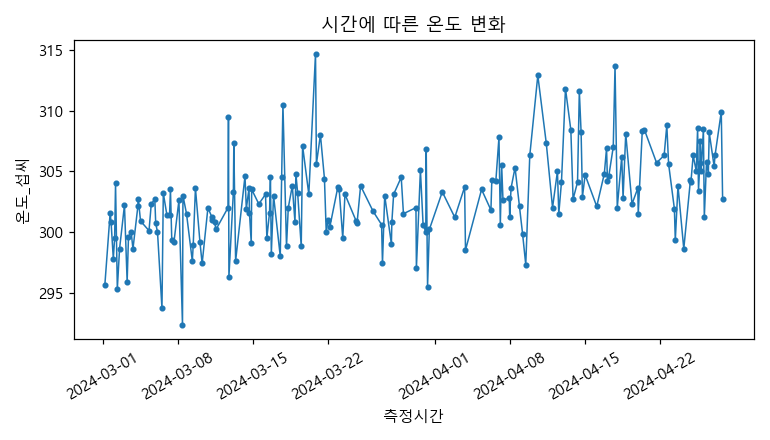
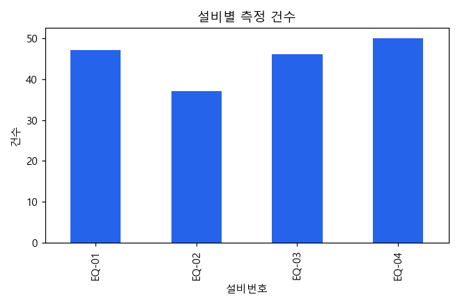
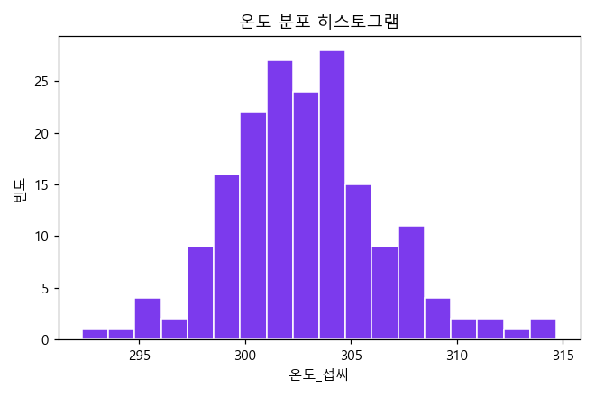
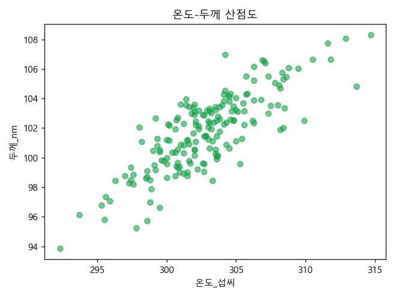

그래프로 공정 상태 이해하기
💬 오늘의 질문: "그림으로 미리 본 패턴을, 코드로 그대로 재현할 수 있을까?"
🎯 학습 목표
- Orange3 위젯으로 먼저 그래프를 그려 패턴을 확인할 수 있다.
- 선/막대/히스토그램/산점도/박스플롯을 구분하고 해석할 수 있다.
- Matplotlib 코드로 같은 그래프를 직접 그려 Orange3 결과와 비교할 수 있다.
선수 지식: 4~5차시 — 정제된 데이터
⏮️ 지난 시간 복습
🟠 ① Orange3로 먼저 훑어보기
Matplotlib 코드를 쓰기 전에 Orange3 위젯으로 온도-두께 산점도, 설비별 온도 박스플롯을 먼저 그려본다. 어떤 설비의 상자가 가장 넓게 퍼져 있는지, 온도와 두께가 관계가 있어 보이는지 눈으로 먼저 짐작해본다.
이제 Orange3로 미리 살펴본 그래프를, 아래에서 Matplotlib 코드로 직접 그려 같은 결론이 나오는지 확인해본다.
🐍 ② 파이썬으로 확인하기 — 다섯 가지 그래프
먼저 측정시간 열을 진짜 날짜/시간 형식으로 바꿔야 시간 순서대로 그래프를 그릴
수 있다.
import pandas as pd
import matplotlib.pyplot as plt
df = pd.read_csv("week06_process_visualization.csv")
df["측정시간"] = pd.to_datetime(df["측정시간"]) # 문자열 → 날짜/시간 형식
df = df.sort_values("측정시간")1. 선 그래프 — 시간에 따른 변화
plt.plot(df["측정시간"], df["온도_섭씨"])
plt.title("시간에 따른 온도 변화")
plt.xlabel("측정시간")
plt.ylabel("온도_섭씨")
plt.show()
시간이 지날수록 온도가 완만하게 올라가는 "드리프트" 패턴이 보인다.
2. 막대그래프 — 범주별 비교
df["설비번호"].value_counts().sort_index().plot(kind="bar")
plt.title("설비별 측정 건수")
plt.xlabel("설비번호")
plt.ylabel("건수")
plt.show()
설비 4대의 측정 건수를 한눈에 비교할 수 있다.
3. 히스토그램 — 값의 분포
plt.hist(df["온도_섭씨"], bins=18)
plt.title("온도 분포 히스토그램")
plt.xlabel("온도_섭씨")
plt.ylabel("빈도")
plt.show()
대부분의 값이 300℃ 근처에 몰려 있는 것을 알 수 있다.
4. 산점도 — 두 변수의 관계
plt.scatter(df["온도_섭씨"], df["두께_nm"])
plt.title("온도-두께 산점도")
plt.xlabel("온도_섭씨")
plt.ylabel("두께_nm")
plt.show()
print(df["온도_섭씨"].corr(df["두께_nm"]))
0.81
점들이 오른쪽 위로 향하는 경향이 보인다 — 온도가 높을수록 두께도 두꺼워지는 관계(상관계수 약 0.81).
5. 박스플롯 — 그룹별 분포와 이상값
df.boxplot(column="온도_섭씨", by="설비번호")
plt.title("설비별 온도 박스플롯")
plt.suptitle("") # 자동으로 붙는 부제목 제거
plt.xlabel("설비번호")
plt.ylabel("온도_섭씨")
plt.show()
EQ-02의 상자(사분위 범위)와 수염이 다른 설비보다 눈에 띄게 넓게 퍼져 있다 — 온도가 가장 불안정한 설비라는 뜻이다.
📚 그래프 선택 가이드
| 알고 싶은 것 | 알맞은 그래프 |
|---|---|
| 시간에 따른 변화 | 선 그래프 |
| 범주(설비 등)별 개수·크기 비교 | 막대그래프 |
| 값이 어느 구간에 몰려 있는지 | 히스토그램 |
| 두 숫자 변수의 관계 | 산점도 |
| 그룹별 값의 퍼짐(분산) 비교 | 박스플롯 |
📚 숫자로 다시 확인하기 — groupby로 검증
그래프에서 본 "EQ-02가 가장 불안정하다"는 인상을 숫자로도 확인해보자(7차시 groupby 예고).
print(df.groupby("설비번호")["온도_섭씨"].std())설비번호 EQ-01 3.22 EQ-02 5.37 EQ-03 3.05 EQ-04 3.02 Name: 온도_섭씨, dtype: float64
🟣 실습: 그래프 다섯 종 따라 그리기
read_csv()로 읽고
pd.to_datetime()으로 측정시간을 변환한다.groupby().std()로 그래프에서 본
결과를 숫자로 다시 확인한다. (학생용 Notebook의 TODO로 이어짐)🗂️ 핵심 용어 카드
선 그래프
- 한 줄 설명
- 시간처럼 순서가 있는 값의 변화를 잇는 그래프.
- 쉬운 비유
- 키 성장 기록표처럼 시간에 따라 변하는 값을 이어 그린 것.
- 데이터에서의 예
plt.plot(df["측정시간"], df["온도_섭씨"])- 자주 하는 오해
- 범주(설비 이름 등) 비교에도 선 그래프를 쓰면 순서가 없는데도 이어져 오해를 부른다.
히스토그램
- 한 줄 설명
- 값을 구간(bin)으로 나눠 각 구간에 몇 개가 있는지 보여주는 그래프.
- 쉬운 비유
- 키를 5cm 단위로 나눠 학생 수를 세는 것.
- 데이터에서의 예
plt.hist(df["온도_섭씨"], bins=18)- 자주 하는 오해
- 히스토그램의 x축을 범주로 착각하기 쉽다. 실제로는 연속된 값의 구간이다.
산점도
- 한 줄 설명
- 두 숫자 변수를 각각 x축, y축에 놓고 점으로 찍어 관계를 보는 그래프.
- 쉬운 비유
- 키와 몸무게를 한 사람당 점 하나로 찍어 관계를 보는 것.
- 데이터에서의 예
plt.scatter(df["온도_섭씨"], df["두께_nm"])- 자주 하는 오해
- 점들이 오른쪽 위로 향한다고 곧바로 "원인"이라 단정하기 쉽다(8차시에서 자세히 다룬다).
박스플롯
- 한 줄 설명
- 그룹별로 값이 어디에 몰려 있고 얼마나 퍼져 있는지 상자 모양으로 보여주는 그래프.
- 쉬운 비유
- 반별 시험 점수의 "대체로 이 구간"과 "튀는 학생"을 한눈에 보여주는 것.
- 데이터에서의 예
df.boxplot(column="온도_섭씨", by="설비번호")- 자주 하는 오해
- 상자 위아래 점(이상치 표시)을 그래프 오류로 착각하기 쉽다. 실제로는 통계적으로 튀는 값을 강조해주는 기능이다.
📁 데이터
data/weekly/week06/week06_process_visualization.csv
180행 10열 — 온도 드리프트, 설비별(EQ-02) 분산 확대 패턴 포함. 자세한 설명은 데이터 설명서 참고.
⚠️ 주의할 점 & 자주 발생하는 오류
TypeError — 측정시간을 pd.to_datetime()으로 변환하지
않고 선 그래프를 그리면 시간 순서가 문자열 순서로 뒤엉킬 수 있다.
df.boxplot(by=...)는 자동으로 부제목을 붙인다. plt.suptitle("")로
지워주지 않으면 제목이 두 줄로 겹쳐 보인다.
🚀 도전 실습
df.boxplot(column="진동_mm_s", by="설비번호")를 실행해 설비별 진동 값의
박스플롯을 직접 그려보자. 온도 박스플롯과 같은 설비(EQ-02)가 가장 넓게 퍼져 있는지
확인하고, 그 이유를 한 문장으로 적어보자.
✅ 결과 정리 & 퀴즈
퀴즈는 실습지와 아래 정리 문제로 확인한다.
pd.______()이다.to_datetime📝 과제(다음 차시까지)
아래 과제를 Colab 노트북 한 개에 순서대로 작성하고, 그래프와 결과를 확인할 수 있게 만들어 제출한다.
압력_Pa 열의 히스토그램을 그리고, 값이 어느 구간에 가장 많이 몰려 있는지
문장으로 설명한다.
공정명별 측정 건수를 막대그래프로 그리고, 가장 많이 측정된 공정과 가장 적게
측정된 공정을 확인한다.
처리시간_sec을 설비별 박스플롯으로 그려보고, 온도·진동과 같은 설비(EQ-02)가
가장 넓게 퍼져 있는지 비교해본다.